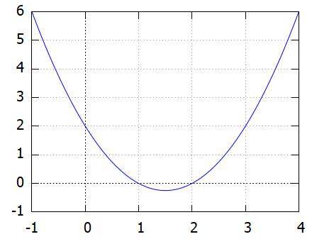
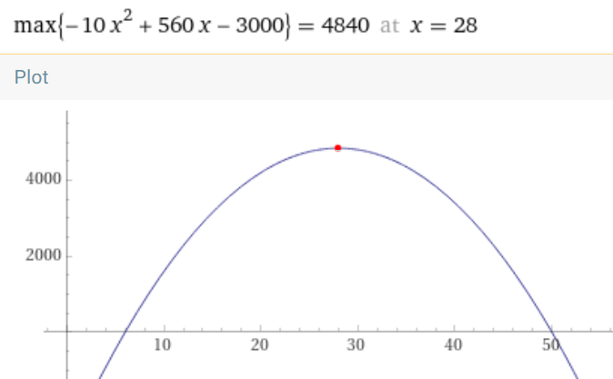

Paraabeli ja 2. asteen polynomimalli
Sisällys
Paraabeli ja 2. asteen polynomimalli¶
Paraabeli y = a x² + b x + c¶
Paraabelin aukeamissuunta
Paraabelin aukeamissuunta määräytyy parametrin a etumerkistä:
Jos a>0, paraabeli aukeaa ylöspäin Jos a<0, paraabeli aukeaa alaspäin
Paraabelin leikkauspisteet x- akselin kanssa
Paraabeli leikkaa x- akselia yhtälön \(a x² + b x + c=0\) nollakohdissa, mikäli niitä on.
Nollakohdat saadaan ratkaisukaavalla \(x = \frac{-b\pm \sqrt{b^2-4ac}}{2a}\)
Nollakohtien lukumäärä riippuu diskriminantin \(D = b^2-4ac\) etumerkistä.
Jos D>0, paraabeli leikkaa x-akselia kahdessa pisteessä
Jos D=0, paraabeli sivuaa x- akseli pisteessä \(b = -\frac{b}{2a}\)
Jos D<0, paraabeli ei leikkaa x- akselia
{kind=link}
Paraabelin piirtämisen kannalta tärkeä piste on paraabelin huippu,
jonka x-koordinaatti on nollakohtien keskiarvo \(\frac{1}{2}\cdot (\frac{-b-\sqrt{b^2-4ac}}{2a}+\frac{-b+\sqrt{b^2-4ac}}{2a}) \) = \(-\frac{b}{2a}\)
Paraabelin huipun koordinaatit
Huipun x-koordinaatti \(x_h = -\frac{b}{2a}\)
Huipun y-koordinaatti \(y_h = a {x_h}^2 + b x_h + c\)
Piirrä paraabeli \(y=x^2-3x+2\). Laske nollakohdat ja huipun koordinaatit
Parametrit a = 1, b = -3 ja c = 2
Juuret ovat 1 ja 2 (ratkaisukaavalla tai W.A:n solve x² -3x+2 = 0)
Huippu: \(x_h = -\frac{b}{2a}\) =\(\frac{3}{2}\)
\(y_h = (\frac{3}{2})^2-3\cdot \frac{3}{2}+1=-\frac{1}{4}\)

Toisen asteen polynomimalli¶
Toisen asteen polynomimallista puhutaan silloin kuin jokin reaalimaailman ongelma voidaan mallintaa käyttämällä toisen asteen polynomilla.
Malli sopii esim. fysiikassa vinon heittoliikkeen mallinnukseen. Sitä voi soveltaa lukuisiin muihinkin tilanteisiin mm. talousmatematiikassa.
Esim. Ammuksen lentorata.
Ammuksen paikan y-koordinaatti lennon aikana voidaan laskea kaavalla
\(y = y_0 + v_0\cdot sin(\alpha) t - \frac{1}{2}g\cdot t^2\)
missä t=aika, g=9.8, \(v_0\) = lähtönopeus, \(\alpha\) = lähtökulma.
Oletetaan, että ammus lähtee 40 m korkean kukkulan laelta lähtönopeudella 500 m/s kulmaan 20 astetta.

Laske a) milloin ammus putoaa mereen b) mikä on lennon lakikorkeus?
Sijoitetaan kaavaan \(y_0 =40, v_0=500, \alpha=20^{\circ}\).
Lentoradan y-koordinaatin yhtälö saa muodon \(y = 40 + 171 t - 4.9 t^2\)
a) Maahantulohetkellä y = 0, joten se saadaan ratkaisemalla \(40 + 171 t - 4.9 t^2 = 0\).
WolframAlphalla solve 40 + 171t - 4.9 t^2=0 antaa juuret -0.23 ja 35.13, joista jälkimmäinen
on kysytty mereentulohetki.
b) Lakikorkeus y saadaan määrittämällä paraabelin huippu:
huipun aikakoordinaatti: \(t_h = -\frac{171}{2*(-4.9)} = 17.5 s\)
huipun y -koordinaatti: \(y_h = 40 + 171\cdot 17.5 - 4.9\cdot {17.5}^2 \approx \) 1530 m
Vihje
WolframAlpha laskimessa on komennot sekä nollakohtien, että huipun laskemiseen:
solve \(ax^2 + bx + c = 0\) (nollakohdat)
maximize \(ax^2 + bx + c\) antaa huipun koordinaatit, jos paraabelin huippu on maksimikohta
minimize \(ax^2 + bx + c\) antaa huipun koordinaatit, jos paraabelin huippu on minimikohta
Edellisessä ammus-esimerkissä komento maximize \(40 + 171 t - 4.9 t^2\) antaa tuloksen seuraavassa muodossa:
max{40+171 t- 4.9 t² } = 1531.9 at t = 17.45
Seuraava esimerkki liittyy kysynnän ja tarjonnan lakiin talousmatematiikassa
Erään tuotteen valmistuskustannukset ovat 6 euroa. Kun merkitään tuotteen hintaa X:llä, kate myydystä tuotteesta on X-6. Myyntimäärä Y riippuu hinnasta kaavan Y = 500 - 10 X mukaisesti. Laske tuotteelle sellainen hinta X, että myyntitulot ovat mahdollisimman suuret.
Myyntitulot = myyntimäärä * kate per tuote = (500-10X)(X-6). Sievennetty myyntituottojen lauseke on
\(500 X - 3000 - 10X^2 + 60X \) = \(-10X^2 + 560 X - 3000\)
Lausekkeen kuvaaja on alaspäin aukeava paraabeli parametrein a=-10, b = 560 ja c = -3000.
Sen maksimikohdassa X = \(-\frac{b}{2a}\) = 560/20 = 28.
Vastaus: parhaan tuoton antava myyntihinta on 28 euroa
